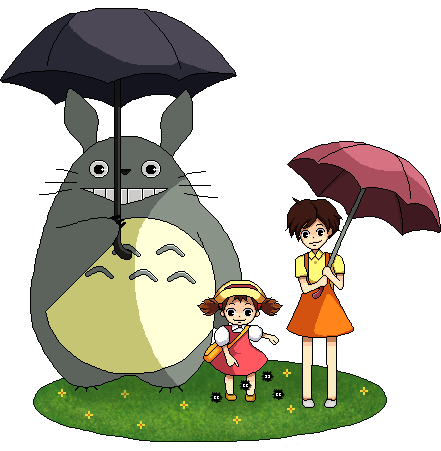

O Filme
Sinopse
As irmãs Satsuki e Mei se mudam para o campo para ficar mais perto do hospital onde sua mãe está internada. Lá conhecem os Totoros, adoráveis criaturas místicas e alegres, que só podem ser vistas pelas crianças. Com eles, as duas irmãs viverão mágicas aventuras no campo.
Personagens
Totoro é um espirito guardião da floresta. O guardião não assume características humanas na história, permanecendo similiar a um bichinho de
estimação, ele se
comunica apenas
por grunhidos e
parece dormir
a maior parte do
tempo.

Os Susuwatari são seres do tamanho de uma bola de tênis, pretos como breu e cabelos felpudos, com dois olhos grandes e membros finos e longos. Eles emitem um som estridente quando excitados e se
dissolvem em pó
(fuligem) se
esmagados.

Mei e Satsuki são duas irmãs que se mudam para uma casa na zona rural com seu pai.
Animadas com a mudança, elas correm e brincam ao redor da nova casa, explorando o lugar e se admirando com o bosque dos arredores.e acabam conhecendo
os espíritos da
floresta e seu
líder, Totoro..
O Catbus é uma criatura grande, retratada como um gato de doze patas sorridente, com um corpo que serve como um ônibus.Ele é capaz de levar seus passageiros para qualquer destino que desejarem, mesmo que o passageiro (ou o próprio ônibus) não tenha o conhecimento de como chegar lá.
Cadastre-se para saber mais sobre o Totoro!!!